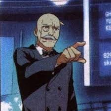

- Hilbert Ron Anjou
- Nicholas Flamel
- Norma Lawrence/EVA
- Von Schneider
- Guderian
-  Gerd Rudolf Manstein
- Mance Rundstedt
- Masashi Toyama
A member of the Primordial Lionhearts who became principal with his own bloodline and abilities. Responsible for managing the academy and organizing dragon slaying. Authorized to distribute dragon bones.
The old man who aided Unger in taking charge of Cassel Academy had opened the Word and Spirit Commandment within the academy, which would only be temporarily lifted under special circumstances.
The super-powerful computer system at Castle College is a supercomputer with a "personality". It is responsible for scouting the academy and activating an alarm if anything happens.
Head of the Executive Department, responsible for dispatching and organizing the commissioners to carry out their tasks.
Tenured Professor of Dragon Genealogy and Chair of the Teaching Committee, responsible for teaching the history of dragons.
Chairperson of the Discipline Committee, in charge of the College's discipline and part-time management of finances.
Responsible for teaching Magic Motion Mechanical Design.
Faculty member, Psychology Department, Cassell College.